Structure et code selon Opquast V5
Présentation - Structure et code selon Opquast V5
Slide 1 sur 38 - Structure et code selon Opquast V5
Slide 1 - Structure et code selon Opquast V5
Nora utilise la souris devant son portable, à une table de bibliothèque. Un cadre bleu à poignées entoure la page entière sur son écran et dans un agrandissement circulaire relié à celui-ci. Une ligne pointillée se dirige vers le carnet ouvert sur la table et s’interrompt. Une façade culturelle apparaît derrière la fenêtre. Le slogan est sous le titre et le nombre de règles dans un cartouche sous la table.
Textes affichés dans l’image
- QUALITÉ WEB
- EXPÉRIENCES DURABLES
- Opquast
- DES SITES MEILLEURS POUR TOUS
- Structure et code selon Opquast V5
- Le contenu se lit, se parcourt, se réutilise
- 15 règles · 231 à 245
- RÈGLES OPQUAST · STRUCTURE ET CODE
- 01 / 38
Voir ne suffit pas
- Le programme est bien à l’écran, mais Nora veut en citer une phrase.
- Dans un PDF composé d’images, les mots ne sont pas du texte manipulable pour les outils de consultation.
- Le livre relie cette difficulté à la copie, à l’indexation et à la lecture par les aides techniques.
- La structure du contenu compte autant que sa présence à l’écran.
- Le texte manipulable n’est qu’une propriété parmi les accès à vérifier ; la structure de titres reste une question distincte.
Mémo oral
- Voir un contenu ne suffit pas à pouvoir l’utiliser.
Transition
- Un défaut se comprend par l’usage qu’il empêche.
Slide 2 - Reconnaître, distinguer, vérifier
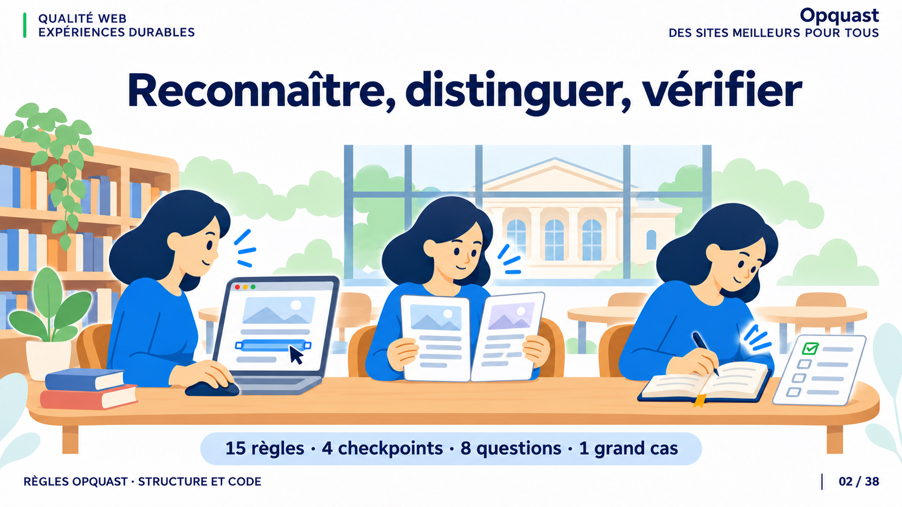
Trois scènes se succèdent le long d’une table de bibliothèque. À gauche, Nora utilise la souris et une ligne de la page est sélectionnée sur son écran. Au centre, elle tient deux documents côte à côte. À droite, elle écrit dans un carnet, près d’une fiche dont la première case est cochée. Un bandeau sous la table donne les nombres de règles, checkpoints, questions et grand cas.
Textes affichés dans l’image
- QUALITÉ WEB
- EXPÉRIENCES DURABLES
- Opquast
- DES SITES MEILLEURS POUR TOUS
- Reconnaître, distinguer, vérifier
- 15 règles · 4 checkpoints · 8 questions · 1 grand cas
- RÈGLES OPQUAST · STRUCTURE ET CODE
- 02 / 38
Une gêne, plusieurs causes possibles
- Une copie empêchée dans une page et un PDF sans texte ne se corrigent pas de la même façon.
- Un menu contextuel inaccessible ne prouve pas que la commande Copier est bloquée ailleurs.
- Reconnaître la situation puis distinguer les mécanismes permet de choisir un contrôle utile.
- La preuve porte sur ce qui a été effectivement observé.
- Ces checkpoints et évaluations sont des exercices originaux de formation, sans lien avec des questions officielles d’examen.
Mémo oral
- Un usage, un mécanisme, une preuve.
Transition
- Les usages donnent un ordre à ces vérifications.
Slide 3 - Cinq usages, puis l’entraînement
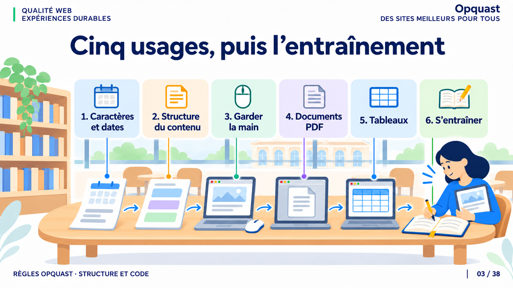
Six panneaux surplombent une table : calendrier, document, souris, feuille, tableau et carnet. Chaque panneau est relié à un poste sur la table. Des flèches vont de gauche à droite entre une fiche datée, une fiche à sections, deux écrans puis un tableau. Au dernier poste, Nora tient un document et écrit dans son carnet.
Textes affichés dans l’image
- QUALITÉ WEB
- EXPÉRIENCES DURABLES
- Opquast
- DES SITES MEILLEURS POUR TOUS
- Cinq usages, puis l’entraînement
- 1. Caractères et dates
- 2. Structure du contenu
- 3. Garder la main
- 4. Documents PDF
- 5. Tableaux
- 6. S’entraîner
- RÈGLES OPQUAST · STRUCTURE ET CODE
- 03 / 38
Des outils au service de cinq usages
- Les caractères et la date doivent être interprétables par les outils.
- Les titres, les listes et les identifiants organisent le contenu et ses relations.
- Copier, ouvrir un menu et lire à son rythme supposent de garder la main.
- Les PDF et les tableaux doivent transmettre leur texte et leur organisation.
- Ces usages se combinent dans une même consultation.
- Ces cinq usages et les actes du parcours sont des regroupements pédagogiques originaux, pas des catégories officielles Opquast.
Mémo oral
- Lire, se repérer, agir, réutiliser.
Transition
- Un lieu et son site permettent de suivre ces usages ensemble.
Slide 4 - La Maison des Lisières continue
Nora montre son téléphone à Samuel, assis derrière un comptoir avec un ordinateur. À droite, une fenêtre titrée Programme est reliée à une feuille PDF interne et à une grille Horaires. Le sous-titre présente le lieu culturel fictif et son site.
Textes affichés dans l’image
- QUALITÉ WEB
- EXPÉRIENCES DURABLES
- Opquast
- DES SITES MEILLEURS POUR TOUS
- La Maison des Lisières continue
- Un lieu culturel fictif et son site
- Programme
- PDF interne
- Horaires
- RÈGLES OPQUAST · STRUCTURE ET CODE
- 04 / 38
Un programme qui circule
- Nora consulte le programme et en reprend des extraits ; Samuel maintient le site.
- Malik parcourt les titres et les tableaux avec son lecteur d’écran.
- Théo appelle les actions d’un lien sur sa tablette ; Inès lit une notice ; Odette annote le programme.
- Leur apparence ne sert pas à expliquer leurs difficultés : ce sont les gestes et les outils qui les rendent visibles.
- La Maison des Lisières et toutes les situations sont fictives.
- Le PDF interne désigne ici le document publié par le service dans le périmètre du livre, sans définition juridique ajoutée.
Mémo oral
- Un lieu, plusieurs usages du même contenu.
Transition
- Quelques mots permettent de décrire précisément ce que ces outils exploitent.
Slide 5 - Six mots pour regarder sous la page
Samuel se tient à droite d’un écran agrandi. Six étiquettes sont reliées à des zones de la page : Élément HTML, Attribut et Identifiant HTML à gauche ; Métadonnée, Unicode et Structure de titres à droite. Il tient la dernière étiquette devant lui ; elle est reliée à un bloc de lignes en retrait.
Textes affichés dans l’image
- QUALITÉ WEB
- EXPÉRIENCES DURABLES
- Opquast
- DES SITES MEILLEURS POUR TOUS
- Six mots pour regarder sous la page
- Élément HTML
- Attribut
- Métadonnée
- Unicode
- Identifiant HTML
- Structure de titres
- RÈGLES OPQUAST · STRUCTURE ET CODE
- 05 / 38
Les objets et leurs relations
- Un élément HTML réunit ses balises et son contenu, ou une balise unique pour certains éléments.
- Un attribut apporte une information à un élément.
- Une métadonnée décrit la page ; celle qui indique le codage se place dans l’élément head.
- Unicode attribue des numéros aux caractères ; UTF-8 en est une forme de codage courante sur le web.
- Un identifiant HTML désigne un élément de façon unique dans la page.
- Une structure de titres reflète l’organisation des sections et sous-sections, avec les titres HTML ou leurs équivalents ARIA.
Mémo oral
- Le code nomme et relie les objets.
Transition
- Ces notions servent à lire des preuves, au-delà du rendu à l’écran.
Slide 6 - Observer, inspecter, essayer
Samuel utilise la souris devant deux écrans : une page et une arborescence à retraits. Une feuille est posée devant le premier écran. Sous le bureau, cinq cartes à pictogrammes nomment les gestes : lire le code et les entêtes HTTP, extraire les titres, copier et ouvrir le menu, sélectionner le texte PDF, linéariser les tableaux.
Textes affichés dans l’image
- QUALITÉ WEB
- EXPÉRIENCES DURABLES
- Opquast
- DES SITES MEILLEURS POUR TOUS
- Observer, inspecter, essayer
- Lire le code et les entêtes HTTP
- Extraire les titres
- Copier et ouvrir le menu
- Sélectionner le texte PDF
- Linéariser les tableaux
- RÈGLES OPQUAST · STRUCTURE ET CODE
- 06 / 38
Le bon geste pour la bonne propriété
- Le code et les entêtes HTTP renseignent la date et le codage des caractères.
- Un plan extrait révèle les titres, y compris ceux que des scripts génèrent ou que les styles masquent.
- Copier et ouvrir le menu contextuel sont deux essais distincts.
- Dans un PDF, sélectionner le texte et examiner les titres répondent aussi à deux questions différentes.
- Linéariser révèle l’ordre réel des contenus d’un tableau de mise en page.
- Le code source reçu et le code généré par le navigateur se distinguent ; les titres et les tableaux peuvent être modifiés par JavaScript.
Mémo oral
- Une propriété, son contrôle.
Transition
- La première information à rendre exploitable est parfois une simple date.
Slide 7 - Une date pour les outils
Nora consulte son portable, un carnet ouvert devant elle. Au centre, une notice datée est encadrée au-dessus d’une seconde notice ; une flèche monte à sa gauche. Une loupe et un trait relient la date à trois lignes de code dans le panneau de droite. Le cartouche d’acte et le badge accompagnent le titre ; un bandeau de garantie occupe le bas.
Textes affichés dans l’image
- QUALITÉ WEB
- EXPÉRIENCES DURABLES
- Opquast
- DES SITES MEILLEURS POUR TOUS
- R. 231
- Acte 1 · Caractères et dates
- Une date pour les outils
- Publié le 8 novembre
- <time datetime="2026-11-08">
- 8 novembre
- </time>
- GARANTIE - Date exploitable par les outils
- RÈGLES OPQUAST · STRUCTURE ET CODE
- 07 / 38
Règles Opquast de la slide
Une date pour les humains et leurs outils
- La notice affiche une date de publication ; son balisage permet aux outils d’indexation de l’exploiter.
- Le livre propose l’élément time et son attribut datetime, au format standard.
- Pour une date, une forme année, mois, jour suffit le plus souvent.
- L’avis de l’expert évoque aussi schema.org ; le format reste indispensable.
Impact du non-respect
- Les outils disposent moins facilement d’une date pour classer les contenus.
Ce que garantit la règle
- Une date de publication ou de mise à jour disponible sous forme programmatique ; aucune position dans les résultats n’est promise.
Contrôle et limites
- Chaque date de publication ou de mise à jour affichée se vérifie dans le code avec time et datetime au format standard.
- L’avis de l’expert admet aussi schema.org, sans dispenser du format approprié ; une date de publication n’est pas une date de rendez-vous.
Mémo oral
- Une date affichée, une date exploitable.
Transition
- Les mots eux-mêmes ont besoin d’une indication de codage.
Slide 8 - Déclarer le jeu de caractères
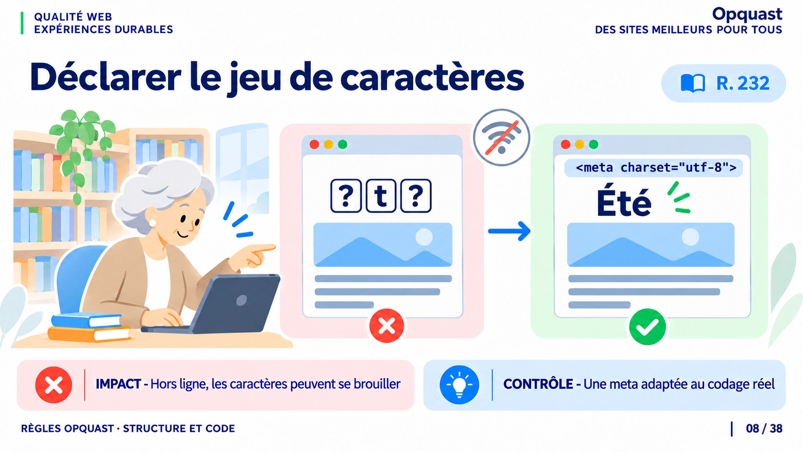
Odette pointe deux vues de page côte à côte. À gauche, les trois caractères de ?t? sont chacun encadrés et une croix accompagne la fenêtre. Une connexion sans fil barrée est au-dessus de la comparaison. Une flèche mène au panneau de droite, avec le code meta, le mot Été et une coche. Deux encadrés présentent l’impact et le contrôle.
Textes affichés dans l’image
- QUALITÉ WEB
- EXPÉRIENCES DURABLES
- Opquast
- DES SITES MEILLEURS POUR TOUS
- R. 232
- Déclarer le jeu de caractères
- ?t?
- Été
- <meta charset="utf-8">
- IMPACT - Hors ligne, les caractères peuvent se brouiller
- CONTRÔLE - Une meta adaptée au codage réel
- RÈGLES OPQUAST · STRUCTURE ET CODE
- 08 / 38
Règles Opquast de la slide
La page garde son indication de codage
- Le serveur transmet normalement le codage par un entête HTTP.
- La métadonnée du HTML rappelle cette information et joue un rôle clé hors ligne ou si l’entête manque.
- Elle doit correspondre au codage effectif du document.
- Le contrôle cherche sa présence et la pertinence de sa valeur, pas seulement le mot UTF-8.
Impact du non-respect
- Le navigateur peut mal interpréter les caractères lorsqu’il manque une information fiable.
Ce que garantit la règle
- Une indication dans chaque page, utile notamment à sa consultation hors ligne.
Contrôle et limites
- Le contrôle cherche meta charset ou la forme http-equiv Content-Type et vérifie la pertinence du jeu de caractères indiqué.
- Selon le livre, l’entête HTTP Content-Type est prioritaire ; une meta seule ne répare pas un entête contradictoire.
- Les caractères brouillés illustrent un risque ; leur seule apparence ne prouve pas l’absence de meta.
Mémo oral
- Déclarer ce que la page utilise.
Transition
- Déclarer un codage et réellement utiliser UTF-8 restent deux questions.
Slide 9 - UTF-8 tout au long du trajet
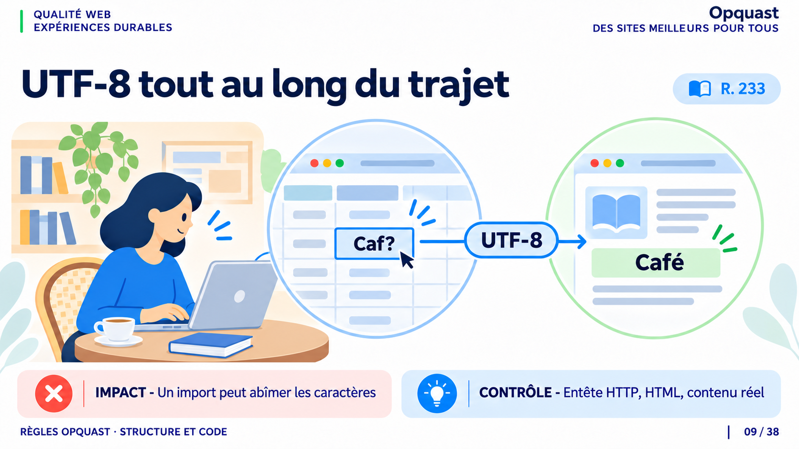
Nora utilise son portable à une table de café. Un premier agrandissement montre un tableur et sa cellule Caf? sélectionnée. Une flèche portant UTF-8 conduit à une notice dans un second agrandissement, où Café est mis en évidence. Deux encadrés présentent l’impact et le contrôle ; le badge est à droite du titre.
Textes affichés dans l’image
- QUALITÉ WEB
- EXPÉRIENCES DURABLES
- Opquast
- DES SITES MEILLEURS POUR TOUS
- R. 233
- UTF-8 tout au long du trajet
- Caf?
- Café
- UTF-8
- IMPACT - Un import peut abîmer les caractères
- CONTRÔLE - Entête HTTP, HTML, contenu réel
- RÈGLES OPQUAST · STRUCTURE ET CODE
- 09 / 38
Règles Opquast de la slide
Prévenir les erreurs de circulation
- Le livre recommande UTF-8 pour sa capacité à représenter de très nombreux caractères.
- Il demande de configurer le serveur et les bases, et de choisir des outils compatibles.
- La vérification rapproche l’entête HTTP, le HTML et le contenu effectivement encodé.
- Le livre cite le validateur HTML et l’outil d’internationalisation du W3C.
Impact du non-respect
- Les défauts de caractères compliquent la lecture et la manipulation des contenus.
Ce que garantit la règle
- Le recours à UTF-8 dans une chaîne cohérente contribue à prévenir ces défauts et à faciliter les migrations.
Contrôle et limites
- Trois vérifications se complètent : l’entête HTTP Content-Type, la cohérence de la meta éventuelle et le codage effectif du contenu.
- Le livre cite le validateur HTML et l’Internationalization Checker du W3C ; lire UTF-8 dans une déclaration ne prouve pas son utilisation réelle.
Mémo oral
- UTF-8 se vérifie dans le contenu aussi.
Transition
- Une déclaration présente n’est donc pas la preuve d’un encodage réel correct.
Slide 10 - Déclaré et utilisé : deux preuves
Samuel se tient entre deux panneaux titrés. À gauche, il pointe une ligne sélectionnée dans une arborescence de page. À droite, plusieurs vues de documents et un tableur entourent une feuille qu’il tient ; deux rangées de formes y sont disposées différemment. Le bandeau inférieur distingue la déclaration de l’encodage.
Textes affichés dans l’image
- QUALITÉ WEB
- EXPÉRIENCES DURABLES
- Opquast
- DES SITES MEILLEURS POUR TOUS
- R. 232 · 233
- Déclaré et utilisé : deux preuves
- Métadonnée dans la page
- UTF-8 réellement utilisé
- Une déclaration ne prouve pas l’encodage
- RÈGLES OPQUAST · STRUCTURE ET CODE
- 10 / 38
Règles Opquast de la slide
Deux questions indépendantes
- La métadonnée doit se trouver dans chaque page et désigner le codage pertinent.
- UTF-8 doit être réellement utilisé, avec des indications cohérentes.
- Une page peut être effectivement en UTF-8 tout en manquant de métadonnée.
- Inversement, lire une déclaration ne dispense pas de contrôler le contenu et l’entête.
- Lire la meta vérifie l’indication locale ; l’entête HTTP, la meta éventuelle et le contenu encodé se confrontent pour établir l’usage d’UTF-8.
Mémo oral
- Déclarer et encoder : deux preuves.
Transition
- C’est le constat précis qui désigne la règle à retenir.
Slide 11 - Checkpoint 1 : caractères et dates
Samuel réfléchit, stylo au-dessus d’un carnet. À droite, trois cartes A, B et C sont empilées sous la question. La première montre une notice avec calendrier et un relevé ; la deuxième une page ; la troisième un fichier relié par une flèche à une fenêtre. Chaque carte porte son constat.
Textes affichés dans l’image
- QUALITÉ WEB
- EXPÉRIENCES DURABLES
- Opquast
- DES SITES MEILLEURS POUR TOUS
- Checkpoint 1 : caractères et dates
- Quelle règle est prouvée enfreinte ?
- A. Date sans forme programmatique
- B. UTF-8 réel, aucune meta
- C. Codage réel : pas UTF-8
- RÈGLES OPQUAST · STRUCTURE ET CODE
- 11 / 38
Règles Opquast de la slide
Trois informations à distinguer
- La date affichée, l’indication de codage et le codage effectif sont trois objets de contrôle.
- Une preuve portant sur un objet ne tranche pas les deux autres.
- Un affichage lisible ne remplace ni le balisage de la date ni l’examen du codage.
Corrigé par objet de règle
- A - Date disponible sous forme programmatique : la date de publication affichée n’a ni time ni autre représentation appropriée ; la métadonnée de codage concerne un autre objet.
- B - Métadonnée définissant le jeu de caractères : elle manque alors que le contenu et l’entête ont été contrôlés en UTF-8 ; aucun défaut d’usage réel d’UTF-8 n’est établi.
- C - Codage effectivement UTF-8 : le contenu utilise un autre codage ; le constat ne dit pas que la déclaration manque.
Mémo oral
- Nommer la propriété réellement contrôlée.
Transition
- Une fois les caractères interprétables, il reste à organiser le contenu.
Slide 12 - Atteindre la bonne section
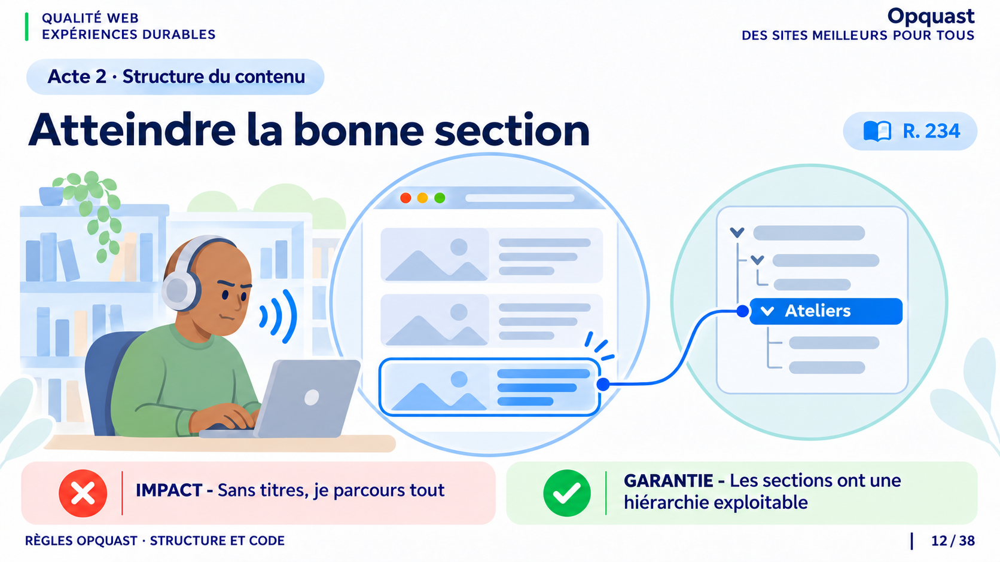
Malik, casque sur les oreilles, utilise son portable. Une page à trois blocs est agrandie au centre ; le bloc inférieur est encadré. Un trait le relie à l’entrée Ateliers sélectionnée dans un plan hiérarchisé à droite. Le cartouche d’acte et le badge accompagnent le titre ; deux encadrés donnent l’impact et la garantie.
Textes affichés dans l’image
- QUALITÉ WEB
- EXPÉRIENCES DURABLES
- Opquast
- DES SITES MEILLEURS POUR TOUS
- R. 234
- Acte 2 · Structure du contenu
- Atteindre la bonne section
- Ateliers
- IMPACT - Sans titres, je parcours tout
- GARANTIE - Les sections ont une hiérarchie exploitable
- RÈGLES OPQUAST · STRUCTURE ET CODE
- 12 / 38
Règles Opquast de la slide
Un plan que les outils peuvent extraire
- Des titres balisés permettent d’atteindre directement la section recherchée.
- Le livre demande au moins un titre de premier niveau, puis des sous-titres adaptés au contenu.
- Il vérifie l’absence de niveau sauté en descendant la hiérarchie.
- Le plan doit prendre en compte les titres masqués et ceux qui sont générés par des scripts.
- Plusieurs titres de premier niveau peuvent être justifiés par l’organisation du contenu.
Impact du non-respect
- Malik perd les points d’entrée que son lecteur d’écran peut exploiter.
Ce que garantit la règle
- Une organisation en sections et sous-sections exploitable au-delà de l’affichage graphique.
Contrôle et limites
- Le plan complet doit inclure les titres masqués et ceux que JavaScript génère.
- Au moins un h1 correspond à la section principale ; les h2 à h6 suivent les sous-sections sans trou dans la descente.
- Revenir vers un niveau supérieur n’est pas un trou, et plusieurs h1 peuvent être justifiés ; la taille des lettres ne prouve pas leur niveau.
Mémo oral
- Un titre est une relation dans un plan.
Transition
- À l’intérieur d’une section, une liste a elle aussi une structure.
Slide 13 - Des puces, une vraie liste
Malik utilise son portable près d’une bobine de fil et d’une pile de papier. Une bulle près de son casque porte l’annonce de liste. Deux pages sont reliées par une flèche : à gauche, deux puces et une croix ; à droite, deux lignes de code de liste, deux puces et une coche. Les encadrés inférieurs opposent impact et garantie.
Textes affichés dans l’image
- QUALITÉ WEB
- EXPÉRIENCES DURABLES
- Opquast
- DES SITES MEILLEURS POUR TOUS
- R. 235
- Des puces, une vraie liste
- <ul><li>Fil</li>
- <li>Papier</li></ul>
- « Liste, 2 éléments »
- IMPACT - Puces tapées : aucune liste annoncée
- GARANTIE - Items annoncés
- RÈGLES OPQUAST · STRUCTURE ET CODE
- 13 / 38
Règles Opquast de la slide
Une liste ne se réduit pas à sa puce
- Les éléments HTML permettent aux outils de reconnaître une liste et ses items.
- Le type dépend du contenu : non ordonné, ordonné, ou termes associés à des descriptions.
- Le livre admet à défaut les rôles ARIA de liste et d’item, sans équivalent pour les listes de définitions.
- Le contrôle vise d’abord les listes explicitement affichées avec marqueurs et retours à la ligne.
Impact du non-respect
- La liste paraît structurée mais les outils ne peuvent pas en exploiter correctement l’organisation.
Ce que garantit la règle
- Une sémantique adaptée au type de liste, au-delà de son dessin.
Contrôle et limites
- Le code utilise ul et li, ol et li, ou dl, dt et dd selon la relation entre les items.
- À défaut, les rôles list et listitem peuvent servir aux listes ordonnées ou non ordonnées ; ils n’ont pas d’équivalent pour la liste de définitions.
- Une liste de descriptions associe des termes à des descriptions ; elle ne sert pas à baliser un formulaire ou un menu déroulant.
- Le contrôle porte sur les listes explicitement présentées avec marqueurs et retours à la ligne, sans imposer une liste à toute énumération horizontale.
- L’annonce de deux éléments illustre une restitution possible ; son libellé exact dépend du logiciel.
Mémo oral
- La puce se voit, la liste se balise.
Transition
- Pour relier un élément précis à une information, il faut aussi pouvoir le désigner sans ambiguïté.
Slide 14 - Un identifiant, un seul élément
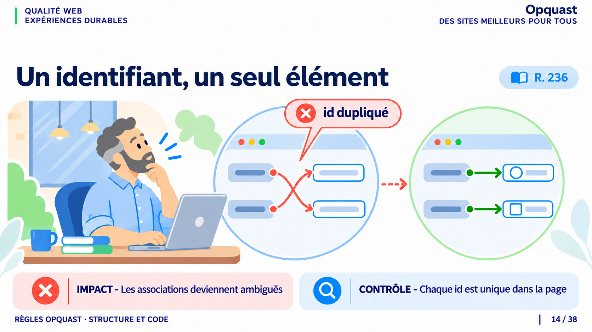
Samuel examine son portable, la main au menton. Au centre, deux relations se croisent en corail sous une bulle id dupliqué accompagnée d’une croix. Une flèche conduit à une seconde vue où deux traits verts relient séparément les éléments ; un cercle et un carré distinguent les cibles. Les encadrés inférieurs portent l’impact et le contrôle.
Textes affichés dans l’image
- QUALITÉ WEB
- EXPÉRIENCES DURABLES
- Opquast
- DES SITES MEILLEURS POUR TOUS
- R. 236
- Un identifiant, un seul élément
- id dupliqué
- IMPACT - Les associations deviennent ambiguës
- CONTRÔLE - Chaque id est unique dans la page
- RÈGLES OPQUAST · STRUCTURE ET CODE
- 14 / 38
Règles Opquast de la slide
Une référence doit retrouver une seule cible
- Copier un composant peut dupliquer son identifiant dans la même page.
- Le livre décrit un risque pour les scripts et pour l’association d’un champ à son étiquette.
- Le comportement varie selon les outils ; un affichage apparemment normal ne prouve donc rien.
- Un validateur peut repérer cette erreur précise sans faire de toute erreur HTML un défaut de cette règle.
Impact du non-respect
- Une interaction ou une restitution peut devenir erronée ou bloquante.
Ce que garantit la règle
- Des identifiants uniques dans la page limitent l’interprétation hasardeuse de ces relations.
Contrôle et limites
- Un validateur HTML ou un autre outil de validation vérifie que chaque valeur id est unique dans la même page.
- Une classe peut se répéter ; l’unicité des identifiants ne s’étend pas à tout le site.
- Ce contrôle précis n’est pas une exigence de validité intégrale du HTML et ne prédit pas un comportement identique sur tous les navigateurs.
Mémo oral
- Unique dans la page, pas dans tout le site.
Transition
- Un repère unique, un titre et une liste répondent à des besoins différents.
Slide 15 - Plan de sections ou liste d’items
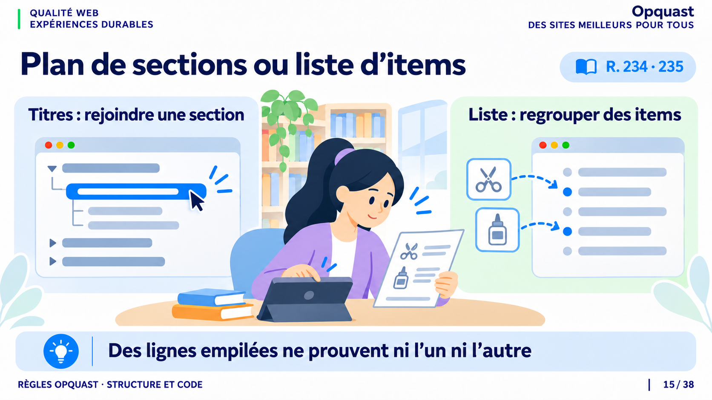
Inès utilise une tablette et tient une fiche de matériel. Le panneau gauche montre un plan hiérarchisé avec une entrée sélectionnée. Le panneau droit relie des ciseaux et un flacon de colle à deux items d’une liste. Chaque panneau est titré ; le bandeau inférieur rappelle que des lignes empilées ne constituent pas une preuve de structure.
Textes affichés dans l’image
- QUALITÉ WEB
- EXPÉRIENCES DURABLES
- Opquast
- DES SITES MEILLEURS POUR TOUS
- R. 234 · 235
- Plan de sections ou liste d’items
- Titres : rejoindre une section
- Liste : regrouper des items
- Des lignes empilées ne prouvent ni l’un ni l’autre
- RÈGLES OPQUAST · STRUCTURE ET CODE
- 15 / 38
Règles Opquast de la slide
Deux relations différentes
- Les titres organisent le document en sections et sous-sections.
- Une liste regroupe des items d’un type adapté à leur relation.
- Un sommaire peut être une liste de liens vers des titres : les deux structures coexistent.
- La mise en forme seule ne permet pas de les vérifier ; il faut examiner leur balisage.
- Sans cette distinction, baliser des items comme des titres ou ajouter des puces aux sections peut laisser le besoin de navigation entier.
Mémo oral
- Les titres organisent, les listes regroupent.
Transition
- Le contrôle doit nommer la relation qui manque.
Slide 16 - Checkpoint 2 : structurer
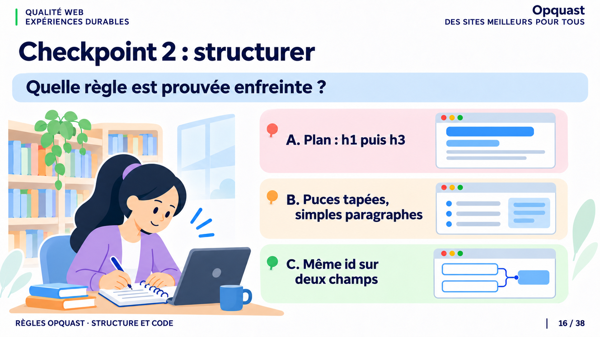
Inès écrit dans un carnet à côté de sa tablette. Sous la question, trois cartes A, B et C sont empilées à droite. Elles montrent un plan à deux niveaux, des puces avec une vue de lignes, puis deux champs reliés à une même cible. Chaque carte porte son constat.
Textes affichés dans l’image
- QUALITÉ WEB
- EXPÉRIENCES DURABLES
- Opquast
- DES SITES MEILLEURS POUR TOUS
- Checkpoint 2 : structurer
- Quelle règle est prouvée enfreinte ?
- A. Plan : h1 puis h3
- B. Puces tapées, simples paragraphes
- C. Même id sur deux champs
- RÈGLES OPQUAST · STRUCTURE ET CODE
- 16 / 38
Règles Opquast de la slide
Trois relations à préserver
- Le plan organise les sections selon leurs niveaux.
- La liste permet de reconnaître ses items.
- L’identifiant retrouve un élément précis.
- Le constat d’inspection indique laquelle de ces relations fait défaut.
Corrigé par objet de règle
- A - Hiérarchie des titres : le plan complet passe de h1 à h3 en descendant, après extraction des titres masqués et générés ; une liste d’items n’est pas en cause.
- B - Balisage approprié des listes : les puces sont de simples paragraphes, sans éléments adaptés ni rôles ARIA list et listitem ; il s’agit d’items, pas de sections.
- C - Unicité de l’identifiant dans la page : deux champs ont le même id ; leur association à une étiquette est un autre contrôle, non établi par ce seul constat.
Mémo oral
- Repérer la relation qui manque.
Transition
- Même structurée, la page peut retirer à la personne les commandes de son navigateur.
Slide 17 - Reprendre une phrase
Nora utilise son portable à une table de café. L’agrandissement central montre deux lignes sélectionnées, une commande activée dans le menu supérieur et la notification Copie bloquée. Une flèche corail en pointillés va vers une note à droite et porte un signe d’arrêt. Le cartouche d’acte et le badge accompagnent le titre ; les encadrés inférieurs donnent l’impact et la garantie.
Textes affichés dans l’image
- QUALITÉ WEB
- EXPÉRIENCES DURABLES
- Opquast
- DES SITES MEILLEURS POUR TOUS
- R. 237
- Acte 3 · Garder la main
- Reprendre une phrase
- Copie bloquée
- IMPACT - Je ne peux pas reprendre ce passage
- GARANTIE - Les fonctions de copie restent disponibles
- RÈGLES OPQUAST · STRUCTURE ET CODE
- 17 / 38
Règles Opquast de la slide
Réutiliser fait partie de la consultation
- Une personne peut vouloir traduire un passage, le citer ou garder une référence.
- Bloquer la commande de copie gêne ces usages ordinaires.
- Le livre demande de laisser fonctionner la copie, quelle que soit la technique de blocage envisagée.
- Il rappelle qu’on ne peut pas empêcher complètement la copie d’un contenu disponible en ligne.
Impact du non-respect
- Nora ne peut pas reprendre son passage par la fonction courante du navigateur.
Ce que garantit la règle
- La disponibilité de cette fonction pour la manipulation et la réutilisation du contenu.
Contrôle et limites
- Pour chaque page, la fonction courante du navigateur doit permettre de copier le contenu, sans blocage par JavaScript, CSS ou une autre technique.
- L’ouverture du menu contextuel se teste séparément ; sa disponibilité ne prouve pas que la copie fonctionne.
Mémo oral
- La consultation comprend la réutilisation.
Transition
- Le menu contextuel rassemble d’autres commandes qu’il faut vérifier à part.
Slide 18 - Le menu reste à moi
Théo tient une tablette et touche son écran. Dans l’agrandissement relié à la tablette, un lien sélectionné ouvre un menu dont une ligne est lisible : Ouvrir dans un nouvel onglet. Le badge est à droite du titre ; deux encadrés présentent l’impact et la limite applicative.
Textes affichés dans l’image
- QUALITÉ WEB
- EXPÉRIENCES DURABLES
- Opquast
- DES SITES MEILLEURS POUR TOUS
- R. 238
- Le menu reste à moi
- Ouvrir dans un nouvel onglet
- IMPACT - Mes actions habituelles disparaissent
- LIMITE - Un menu applicatif spécifique peut se justifier
- RÈGLES OPQUAST · STRUCTURE ET CODE
- 18 / 38
Règles Opquast de la slide
Un menu appartient aux usages du navigateur
- Le clic droit ou certains raccourcis ouvrent des actions liées au contenu visé.
- Leur liste dépend du navigateur et du contexte.
- Les neutraliser gêne des fonctions utiles sans protéger réellement le contenu contre la copie.
- L’expert admet le cas d’une application qui fournit un menu spécifique pour des actions graphiques ou cartographiques.
Impact du non-respect
- Théo perd son accès habituel aux actions sur le lien.
Ce que garantit la règle
- L’accès aux fonctions contextuelles de l’outil de consultation, dans le périmètre prévu par le livre.
Contrôle et limites
- Pour chaque page, le menu contextuel doit pouvoir s’ouvrir depuis l’ensemble des contenus affichés, au clic droit ou par un raccourci adapté.
- L’appui long illustre le tactile ; le geste et les commandes disponibles se vérifient sur le navigateur concerné.
- L’exception citée concerne un menu spécifique aux actions d’une application graphique ou cartographique, sans permission générale de neutraliser le menu.
Mémo oral
- Le menu reste un outil de la personne.
Transition
- Copier et appeler le menu restent deux gestes indépendants, même sur un même contenu.
Slide 19 - Copier ou ouvrir le menu
Nora est assise entre deux panneaux. À gauche, une commande du menu supérieur accompagne un passage sélectionné, une flèche vers une note et des coches. À droite, un contour de menu en pointillés corail porte une croix. Chaque panneau nomme le geste ; le bandeau inférieur rappelle l’indépendance des résultats.
Textes affichés dans l’image
- QUALITÉ WEB
- EXPÉRIENCES DURABLES
- Opquast
- DES SITES MEILLEURS POUR TOUS
- R. 237 · 238
- Copier ou ouvrir le menu
- Copier par la commande habituelle
- Ouvrir le menu contextuel
- Un geste réussi ne prouve pas l’autre
- RÈGLES OPQUAST · STRUCTURE ET CODE
- 19 / 38
Règles Opquast de la slide
Deux résultats à recueillir
- Copier un passage peut se faire par une commande qui reste accessible sans le menu contextuel.
- Le menu contextuel donne accès à d’autres fonctions que Copier.
- Son blocage ne prouve donc pas un blocage de la copie.
- Il faut essayer les deux fonctionnalités pour conclure sur chacune.
- Un blocage du menu peut laisser Copier disponible par le menu principal ou le raccourci habituel ; la réussite de cette copie ne prouve pas l’accès aux autres actions.
Mémo oral
- Copier et ouvrir le menu : deux essais.
Transition
- La même précision s’applique à un changement automatique de page.
Slide 20 - Ne pas recommencer sa lecture
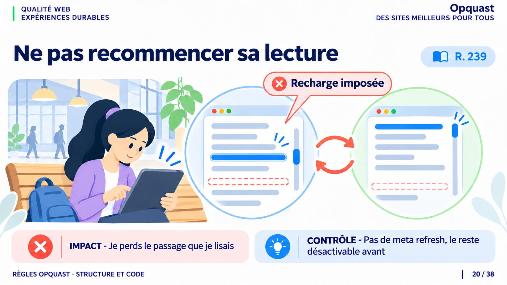
Inès lit sa tablette sur un banc. Deux vues agrandies de la page sont reliées par des flèches circulaires corail. Le curseur de défilement est à mi-course à gauche et en haut à droite ; un repère pointillé marque une ligne dans les deux vues. Une bulle indique Recharge imposée. Deux encadrés donnent l’impact et le contrôle.
Textes affichés dans l’image
- QUALITÉ WEB
- EXPÉRIENCES DURABLES
- Opquast
- DES SITES MEILLEURS POUR TOUS
- R. 239
- Ne pas recommencer sa lecture
- Recharge imposée
- IMPACT - Je perds le passage que je lisais
- CONTRÔLE - Pas de meta refresh, le reste désactivable avant
- RÈGLES OPQUAST · STRUCTURE ET CODE
- 20 / 38
Règles Opquast de la slide
Le temps de lire ne se décide pas à l’avance
- Un rechargement peut ramener au début du contenu ; une redirection peut laisser trop peu de temps pour lire un avertissement.
- Le livre souligne les difficultés au lecteur d’écran et lors d’une consultation mobile.
- Il demande de ne pas utiliser la métadonnée de rafraîchissement automatique.
- Les autres mécanismes éventuels doivent pouvoir être désactivés avant leur déclenchement, depuis le site.
Impact du non-respect
- La lecture est interrompue et le passage doit être retrouvé ; des données mobiles peuvent être consommées sans souhait de l’utilisateur.
Ce que garantit la règle
- La maîtrise de la consultation face aux redirections et rechargements côté client.
Contrôle et limites
- Le contrôle associe inspection de l’absence de meta refresh et observation de la page pour les autres mécanismes.
- Le JavaScript, object ou l’entête HTTP refresh éventuels doivent pouvoir être désactivés avant leur déclenchement dans l’interface du site, sans dépendre d’une option du navigateur.
- Une redirection HTTP 3xx est distincte d’une redirection côté client ; l’entête HTTP refresh figure bien parmi les mécanismes cités par le livre.
- Une mise à jour partielle AJAX n’est pas automatiquement un rechargement imposé ; cette distinction pédagogique s’appuie sur le glossaire.
Mémo oral
- Le temps de lecture appartient à la personne.
Transition
- Les commandes bloquées et le changement automatique se distinguent par le geste qui a échoué.
Slide 21 - Checkpoint 3 : garder la main
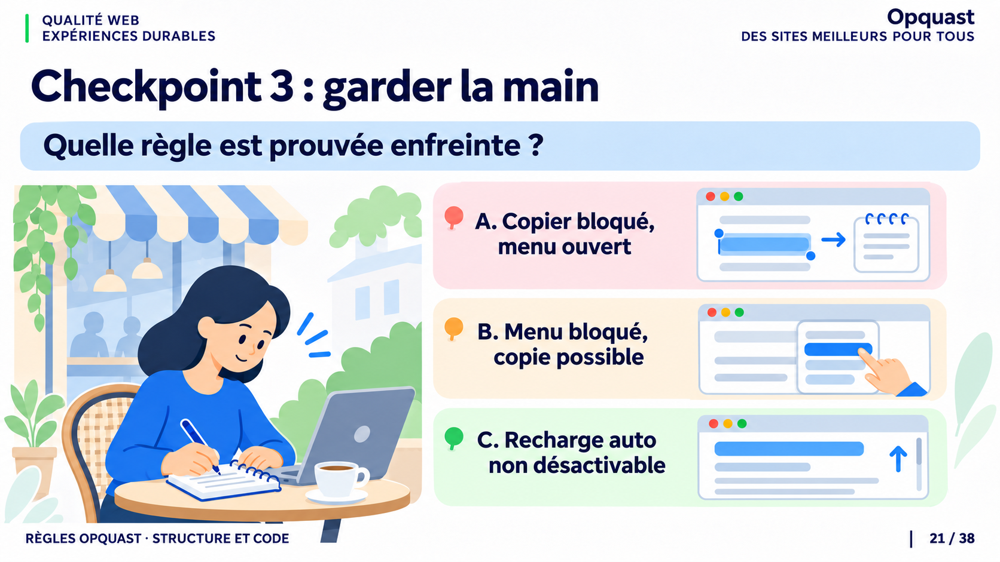
Nora écrit dans son carnet à une table de café. Trois cartes A, B et C sont empilées à droite, sous la question. Elles montrent un passage relié à une note, un doigt au niveau d’un menu puis une page avec une flèche remontant vers le haut. Chaque carte porte son constat.
Textes affichés dans l’image
- QUALITÉ WEB
- EXPÉRIENCES DURABLES
- Opquast
- DES SITES MEILLEURS POUR TOUS
- Checkpoint 3 : garder la main
- Quelle règle est prouvée enfreinte ?
- A. Copier bloqué, menu ouvert
- B. Menu bloqué, copie possible
- C. Recharge auto non désactivable
- RÈGLES OPQUAST · STRUCTURE ET CODE
- 21 / 38
Règles Opquast de la slide
Ce qui est bloqué et ce qui est imposé
- La fonction de copie et le menu contextuel sont contrôlés séparément.
- Le rechargement imposé retire un autre choix : celui de poursuivre la lecture.
- La disponibilité d’une fonction ne compense pas le blocage d’une autre.
Corrigé par objet de règle
- A - Disponibilité de la copie : Copier échoue alors que le menu s’ouvre ; l’accès au menu n’est pas le défaut constaté.
- B - Accès au menu contextuel : il est bloqué dans une page éditoriale ordinaire tandis que la copie fonctionne ; il ne s’agit pas d’un menu applicatif spécifique.
- C - Maîtrise du rechargement côté client : aucune désactivation préalable n’est possible dans l’interface du site ; l’ouverture du menu n’est pas en cause.
Mémo oral
- Garder ses commandes et son rythme.
Transition
- Un document téléchargé doit lui aussi laisser du texte et des repères exploitables.
Slide 22 - Du vrai texte dans le PDF
Odette utilise une souris, son crayon posé sur la table. Une première fenêtre montre une page entière encadrée de poignées de sélection. Une flèche conduit à une seconde fenêtre où deux lignes sont sélectionnées individuellement. Le cartouche d’acte et le badge accompagnent le titre ; les encadrés inférieurs donnent l’impact et la limite.
Textes affichés dans l’image
- QUALITÉ WEB
- EXPÉRIENCES DURABLES
- Opquast
- DES SITES MEILLEURS POUR TOUS
- R. 240
- Acte 4 · Documents PDF
- Du vrai texte dans le PDF
- IMPACT - Une image ne fournit pas de texte manipulable
- LIMITE - Sélectionnable ne veut pas dire tout accessible
- RÈGLES OPQUAST · STRUCTURE ET CODE
- 22 / 38
Règles Opquast de la slide
Une image de page n’est pas son texte
- Un scan pur rassemble des images de pages ; les outils ne trouvent pas de texte manipulable.
- Le livre propose une conversion depuis la source numérique, ou une reconnaissance de caractères si nécessaire.
- La vérification consiste à sélectionner le texte immédiatement ou à le consulter au lecteur d’écran.
- Quand c’est possible, le livre préfère le format HTML au PDF pour l’accessibilité.
Impact du non-respect
- Copier, traduire, indexer ou faire restituer le texte devient impossible dans un document composé seulement d’images.
Ce que garantit la règle
- Un accès textuel minimal ; la structure et les autres propriétés du PDF restent à contrôler.
Contrôle et limites
- Chaque PDF interne s’ouvre pour vérifier que le texte est immédiatement sélectionnable ou consultable avec un lecteur d’écran.
- La conversion depuis une source numérique ou l’OCR peut fournir du texte ; un scan peut donc être repris.
- La sélection ne prouve ni l’exactitude de l’OCR, ni la structure de titres, ni l’accessibilité globale du document.
Mémo oral
- Du texte sélectionnable, un accès minimal.
Transition
- Pouvoir sélectionner le texte ne donne pas encore le plan du document.
Slide 23 - Dans le PDF, rejoindre une section
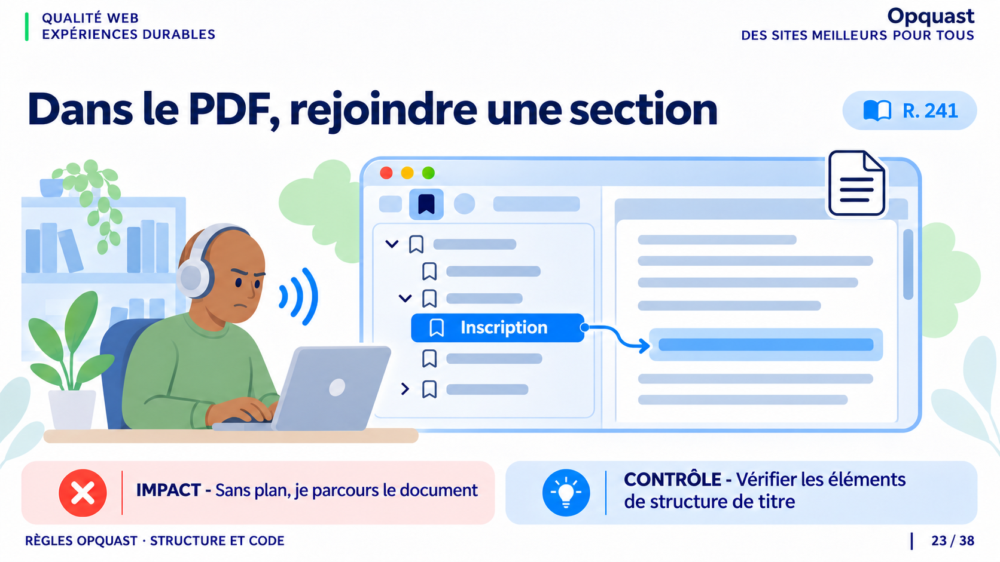
Malik utilise son portable. La grande fenêtre PDF à droite comporte un volet hiérarchisé de signets ; l’entrée Inscription y est sélectionnée. Une flèche relie cette entrée à une ligne de la page mise en évidence. Une feuille neutre figure en haut de la fenêtre. Deux encadrés présentent l’impact et le contrôle.
Textes affichés dans l’image
- QUALITÉ WEB
- EXPÉRIENCES DURABLES
- Opquast
- DES SITES MEILLEURS POUR TOUS
- R. 241
- Dans le PDF, rejoindre une section
- Inscription
- IMPACT - Sans plan, je parcours le document
- CONTRÔLE - Vérifier les éléments de structure de titre
- RÈGLES OPQUAST · STRUCTURE ET CODE
- 23 / 38
Règles Opquast de la slide
Un document à points d’entrée
- Une structure de titres facilite l’accès direct aux différentes sections du PDF.
- Dans une source bureautique, les styles de titres préparent cette structure.
- L’export doit conserver un PDF balisé ou tagué.
Impact du non-respect
- Malik perd les accès directs aux sections et doit parcourir davantage de contenu.
Ce que garantit la règle
- La présence de titres structurés pour organiser et parcourir le PDF, sans certifier ses autres propriétés.
Contrôle et limites
- Le livre admet trois moyens de vérifier les éléments de structure de titre : un outil d’inspection du code, un lecteur PDF affichant les signets ou la consultation au lecteur d’écran.
- Les styles Titre 1, Titre 2 et Titre 3 dans la source bureautique préparent la structure ; l’export PDF balisé ou tagué doit la conserver.
- Un titre visuellement grand ne prouve pas le balisage, et l’export balisé ne prouve pas toute l’accessibilité du document.
Mémo oral
- Des titres dans la source, conservés dans le PDF.
Transition
- Le texte et le plan se vérifient séparément, même dans un seul PDF.
Slide 24 - Texte PDF et titres PDF
Nora utilise la souris à une table de café, entre deux panneaux. À gauche, trois lignes sélectionnées dans un document sont reliées à une note et une coche accompagne le titre du panneau. À droite, une fenêtre d’inspection avec une loupe porte une croix corail, également présente près du titre du panneau. Le bandeau inférieur rappelle la distinction entre texte et structure de titres.
Textes affichés dans l’image
- QUALITÉ WEB
- EXPÉRIENCES DURABLES
- Opquast
- DES SITES MEILLEURS POUR TOUS
- R. 240 · 241
- Texte PDF et titres PDF
- Sélection : reprendre les mots
- Titres : rejoindre les sections
- Du texte ne prouve pas une structure de titres
- RÈGLES OPQUAST · STRUCTURE ET CODE
- 24 / 38
Règles Opquast de la slide
Deux qualités qui se complètent
- Le texte sélectionnable permet une manipulation minimale du contenu.
- La structure de titres donne des points d’entrée dans le document.
- Un PDF peut offrir la première sans la seconde.
- Il faut examiner chacune ; ni un beau titre visuel ni une sélection réussie ne remplace le contrôle de la structure, par inspection, signets ou lecteur d’écran.
- Les éléments de titres se contrôlent au choix par inspection du code, par un lecteur PDF affichant les signets ou par consultation au lecteur d’écran ; ces trois voies sont admises par le livre.
- La sélection ne prouve ni l’exactitude d’un OCR ni toute l’accessibilité du document.
Mémo oral
- Sélectionner ne prouve pas structurer.
Transition
- Dans un tableau, le texte a aussi besoin de relations pour devenir compréhensible.
Slide 25 - Relier la cellule à ses entêtes
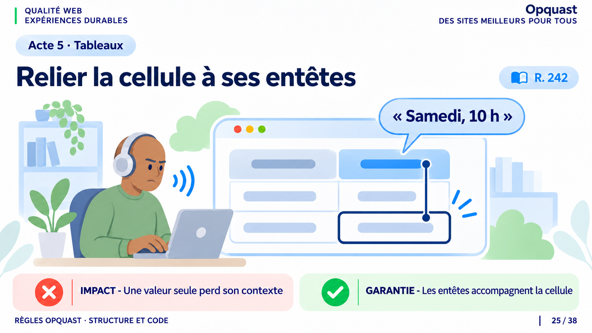
Malik utilise son portable avec son casque. Un tableau agrandi contient deux colonnes et deux lignes sous les entêtes. Une cellule de la colonne droite est encadrée et reliée par un trait à son entête. Une bulle annonce « Samedi, 10 h ». Le cartouche d’acte et le badge accompagnent le titre ; deux encadrés donnent l’impact et la garantie.
Textes affichés dans l’image
- QUALITÉ WEB
- EXPÉRIENCES DURABLES
- Opquast
- DES SITES MEILLEURS POUR TOUS
- R. 242
- Acte 5 · Tableaux
- Relier la cellule à ses entêtes
- « Samedi, 10 h »
- IMPACT - Une valeur seule perd son contexte
- GARANTIE - Les entêtes accompagnent la cellule
- RÈGLES OPQUAST · STRUCTURE ET CODE
- 25 / 38
Règles Opquast de la slide
Une valeur a besoin de son contexte
- Dans un tableau, les entêtes indiquent ce que signifie chaque donnée.
- Le livre demande de baliser ces entêtes et leur portée.
- Pour un tableau simple, scope relie une entête à toute sa ligne ou sa colonne.
- Les associations plus complexes peuvent demander des identifiants et des références explicites ; l’expert préfère simplifier les tableaux quand c’est possible.
Impact du non-respect
- Une succession de valeurs peut devenir incompréhensible au lecteur d’écran.
Ce que garantit la règle
- Des relations explicites que les aides techniques peuvent exploiter, sans promettre une annonce identique partout.
Contrôle et limites
- Dans le code généré, les entêtes utilisent th et une portée scope col ou scope row pour une colonne ou une ligne entière.
- Pour les entêtes ne portant que sur une partie, id sur th et headers sur les cellules doivent exprimer les associations appropriées.
- L’expert admet scope pour les tableaux simples et conseille de simplifier les tableaux complexes ; il ne faut donc pas imposer id et headers partout.
- La bulle illustre la relation cellule-entête, sans promettre une annonce identique dans toutes les aides techniques.
Mémo oral
- Une cellule se comprend avec ses entêtes.
Transition
- Comprendre une cellule ne dit pas encore quel tableau on vient de rencontrer.
Slide 26 - Nommer le tableau entier
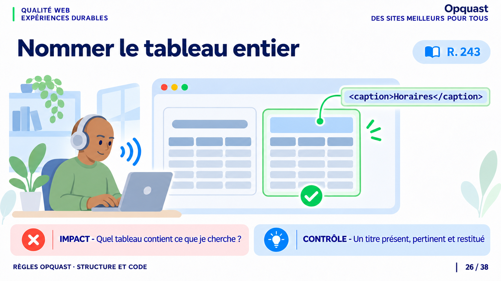
Malik utilise son portable. Deux tableaux apparaissent dans une grande fenêtre ; celui de droite est encadré en vert et accompagné d’une coche. Son titre est relié au code caption dans un ruban d’inspection. Le badge est à droite du titre ; deux encadrés présentent l’impact et le contrôle.
Textes affichés dans l’image
- QUALITÉ WEB
- EXPÉRIENCES DURABLES
- Opquast
- DES SITES MEILLEURS POUR TOUS
- R. 243
- Nommer le tableau entier
- <caption>Horaires</caption>
- IMPACT - Quel tableau contient ce que je cherche ?
- CONTRÔLE - Un titre présent, pertinent et restitué
- RÈGLES OPQUAST · STRUCTURE ET CODE
- 26 / 38
Règles Opquast de la slide
Identifier avant de parcourir
- Un lecteur d’écran peut proposer la liste des tableaux d’une page.
- Leur titre permet de choisir le bon ensemble sans commencer par ses valeurs.
- Le livre utilise caption, éventuellement masqué à l’affichage s’il reste accessible aux lecteurs d’écran.
- Un outil peut détecter sa présence ; sa pertinence exige un examen humain.
Impact du non-respect
- La nature du tableau reste difficile à identifier avant sa lecture.
Ce que garantit la règle
- Un titre qui décrit les informations du tableau et reste restituable.
Contrôle et limites
- Chaque tableau de données a un caption présent et pertinent ; s’il est masqué en CSS, il doit rester accessible au lecteur d’écran.
- Sa présence peut être partiellement automatisée, mais sa pertinence demande un examen humain.
- Le caption nomme l’ensemble ; il ne remplace pas les entêtes de colonnes, et un simple texte placé au-dessus ne remplace pas le caption demandé ici.
Mémo oral
- Le caption nomme l’ensemble.
Transition
- Avant de contrôler une grille, il faut aussi savoir si elle contient des données ou sert à placer des blocs.
Slide 27 - L’ordre doit tenir sans les colonnes
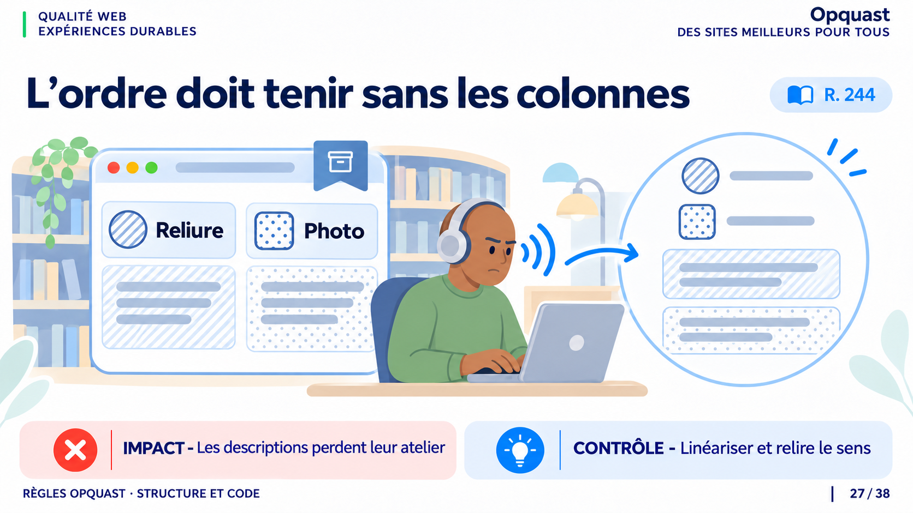
Malik utilise son portable. À gauche, une page porte deux colonnes : Reliure avec un cercle hachuré, Photo avec un carré pointillé ; les descriptions reprennent ces motifs. Une flèche conduit à une vue verticale à droite : le cercle, le carré, le bloc hachuré puis le bloc pointillé se succèdent. Deux encadrés donnent l’impact et le contrôle.
Textes affichés dans l’image
- QUALITÉ WEB
- EXPÉRIENCES DURABLES
- Opquast
- DES SITES MEILLEURS POUR TOUS
- R. 244
- L’ordre doit tenir sans les colonnes
- Reliure
- Photo
- IMPACT - Les descriptions perdent leur atelier
- CONTRÔLE - Linéariser et relire le sens
- RÈGLES OPQUAST · STRUCTURE ET CODE
- 27 / 38
Règles Opquast de la slide
Lire dans l’ordre du code
- Une ancienne page peut utiliser des cellules pour placer deux contenus côte à côte.
- L’aide technique peut les restituer linéairement dans l’ordre du code.
- Si les noms arrivent tous avant leurs descriptions, leurs associations deviennent difficiles à suivre.
- Le livre propose de regrouper dans une même cellule ce qui doit rester verticalement associé.
Impact du non-respect
- L’ordre linéaire casse le sens des contenus.
Ce que garantit la règle
- Une lecture compréhensible même sans la disposition initiale du tableau de mise en page.
Contrôle et limites
- Un tableau de mise en page place des blocs sans relation de données à des entêtes ; le contrôle le linéarise et vérifie le sens, sans incohérence ni perte.
- La solution du livre regroupe dans une même cellule les informations qui doivent rester verticalement associées.
- Le cas vise notamment les anciennes pages ; il ne recommande pas les tableaux pour les nouvelles mises en page et ne les condamne pas tous par leur seule présence.
Mémo oral
- L’ordre du code doit garder le sens.
Transition
- Pour de véritables données, le risque inverse existe : une grille dessinée sans tableau.
Slide 28 - Une grille dessinée ne suffit pas
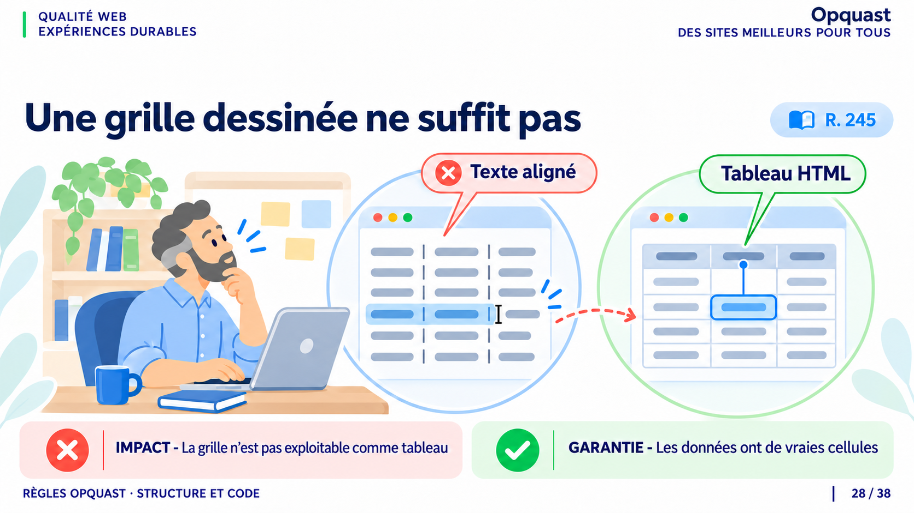
Samuel examine son portable. Le premier agrandissement montre des lignes de texte séparées par des traits verticaux, une sélection partielle et un curseur d’insertion, sous la bulle Texte aligné marquée d’une croix. Une flèche conduit au panneau Tableau HTML, où une cellule sélectionnée est reliée à son entête. Les encadrés inférieurs donnent l’impact et la garantie.
Textes affichés dans l’image
- QUALITÉ WEB
- EXPÉRIENCES DURABLES
- Opquast
- DES SITES MEILLEURS POUR TOUS
- R. 245
- Une grille dessinée ne suffit pas
- Texte aligné
- Tableau HTML
- IMPACT - La grille n’est pas exploitable comme tableau
- GARANTIE - Les données ont de vraies cellules
- RÈGLES OPQUAST · STRUCTURE ET CODE
- 28 / 38
Règles Opquast de la slide
Publier les relations, pas seulement la forme
- Des horaires saisis en colonnes avec des séparateurs restent du texte, sans cellules de tableau HTML.
- Les alignements par espaces ou caractères graphiques posent le même problème de structure.
- Le livre demande de baliser les tableaux de données avec les éléments adaptés.
- Il conseille de publier directement le tableau plutôt que de fabriquer l’alternative d’une image de tableau.
Impact du non-respect
- Les outils ne disposent pas d’un tableau de données exploitable et compréhensible.
Ce que garantit la règle
- La présence d’un vrai tableau de données ; ses titres et ses relations restent à contrôler précisément.
Contrôle et limites
- Le contrôle recherche les tableaux de données en image et les simulations par espaces ou séparateurs, puis vérifie table, tr, td, th et caption dans le code.
- Des données tabulaires relient des valeurs à des entêtes ; une simple liste alignée n’est pas automatiquement un tableau.
- Ici, les deux panneaux contiennent du texte ; la comparaison porte sur la structure et ne prouve pas un remplacement du texte par une image.
Mémo oral
- Des données tabulaires, un vrai tableau.
Transition
- Un tableau de mise en page et un tableau simulé demandent donc deux diagnostics différents.
Slide 29 - Mise en page ou données simulées
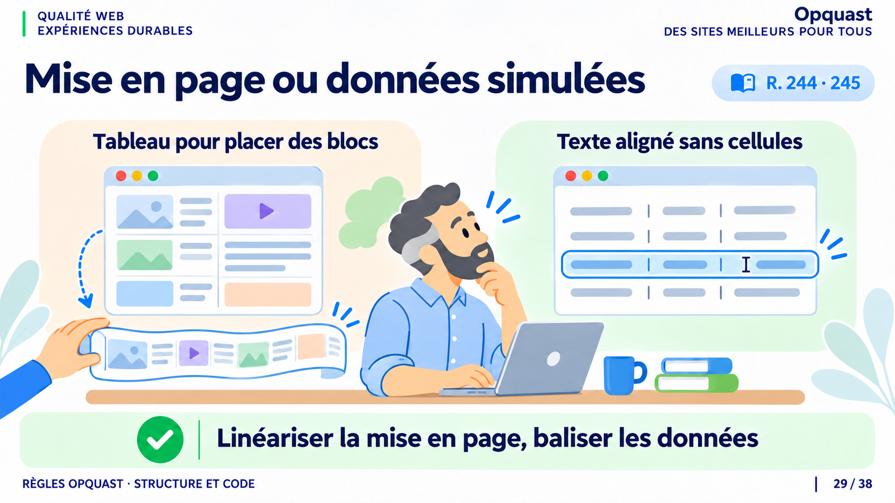
Samuel se tient entre deux panneaux. À gauche, une page à blocs disposés en colonnes se déroule en une bande horizontale tenue par une main ; une flèche indique ce passage. À droite, une ligne de texte avec des séparateurs verticaux est sélectionnée et un curseur d’insertion apparaît. Le bandeau inférieur associe linéarisation de la mise en page et balisage des données.
Textes affichés dans l’image
- QUALITÉ WEB
- EXPÉRIENCES DURABLES
- Opquast
- DES SITES MEILLEURS POUR TOUS
- R. 244 · 245
- Mise en page ou données simulées
- Tableau pour placer des blocs
- Texte aligné sans cellules
- Linéariser la mise en page, baliser les données
- RÈGLES OPQUAST · STRUCTURE ET CODE
- 29 / 38
Règles Opquast de la slide
La fonction décide du contrôle
- Le tableau de mise en page sert à disposer des blocs ; il faut vérifier leur sens après linéarisation.
- Les horaires textuels alignés remplacent un tableau de données ; il faut publier les relations dans un vrai tableau.
- Une grille visible ne suffit à identifier ni la technique ni la fonction.
- L’examen du contenu et du code permet de les départager.
- Pour les données, les entêtes contextualisent les cellules et le caption nomme l’ensemble ; ces contrôles restent distincts.
Mémo oral
- D’abord la fonction, ensuite le contrôle.
Transition
- Les tableaux de données demandent encore de distinguer le titre de l’ensemble et les entêtes des cellules.
Slide 30 - Checkpoint 4 : tableaux
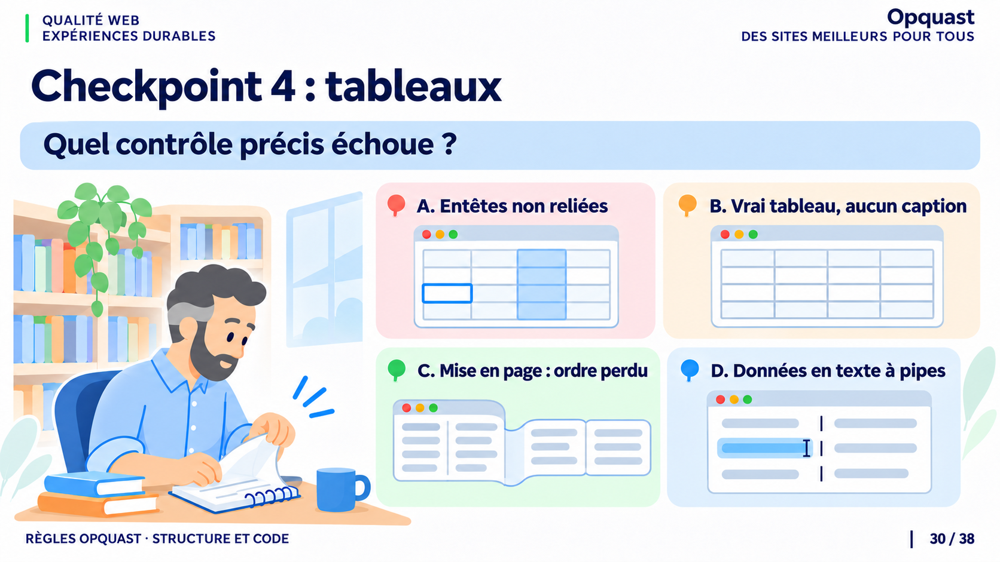
Samuel feuillette son carnet. Quatre cartes A à D sont disposées en deux rangées sous la question. A montre une cellule et une colonne mises en évidence ; B une grille ; C une mise en colonnes reliée à une suite de blocs ; D des lignes à séparateurs verticaux avec une sélection et un curseur d’insertion. Chaque carte porte son constat.
Textes affichés dans l’image
- QUALITÉ WEB
- EXPÉRIENCES DURABLES
- Opquast
- DES SITES MEILLEURS POUR TOUS
- Checkpoint 4 : tableaux
- Quel contrôle précis échoue ?
- A. Entêtes non reliées
- B. Vrai tableau, aucun caption
- C. Mise en page : ordre perdu
- D. Données en texte à pipes
- RÈGLES OPQUAST · STRUCTURE ET CODE
- 30 / 38
Règles Opquast de la slide
Quatre questions sur les grilles
- Les entêtes donnent leur contexte aux cellules.
- Le titre permet d’identifier la nature du tableau.
- L’ordre linéaire doit conserver le sens d’une mise en page.
- Les données doivent être publiées comme un tableau, avec de vraies cellules.
Corrigé par objet de règle
- A - Relation entre cellules et entêtes : le contrôle spécifique des associations échoue dans un vrai tableau ; le titre de l’ensemble est une autre question.
- B - Titre du tableau : le caption manque dans un vrai tableau ; ce constat ne porte pas sur l’ordre d’une mise en page.
- C - Sens après linéarisation de la mise en page : l’ordre perd les associations utiles ; ce n’est pas une simulation de données.
- D - Vrai tableau de données : les horaires restent du texte à pipes ; aucun tableau de mise en page n’est linéarisé ici.
- La question demande le contrôle le plus précis pour la relation, le titre, l’ordre ou la simulation ; ce choix est une convention pédagogique.
- Le contrôle général du vrai tableau recoupe th et caption ; une réponse argumentée à ce niveau se précise vers le contrôle de l’association ou du titre, sans être factuellement fausse.
Mémo oral
- Cellule, ensemble, ordre, structure.
Transition
- Ces relations prolongent des exigences déjà rencontrées dans les formulaires et les contenus masqués.
Slide 31 - Des relations au-delà de la rubrique
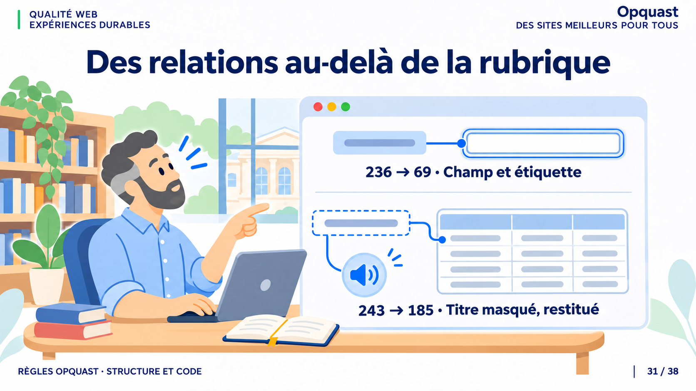
Samuel pointe une page agrandie. En haut, une ligne relie une étiquette à un champ ; la première relation numérotée est écrite dessous. En bas, un cartouche pointillé est relié à un tableau et à un haut-parleur ; la seconde relation numérotée figure sous cette scène.
Textes affichés dans l’image
- QUALITÉ WEB
- EXPÉRIENCES DURABLES
- Opquast
- DES SITES MEILLEURS POUR TOUS
- Des relations au-delà de la rubrique
- 236 → 69 · Champ et étiquette
- 243 → 185 · Titre masqué, restitué
- RÈGLES OPQUAST · STRUCTURE ET CODE
- 31 / 38
Règles Opquast de la slide
Deux liens concrets entre rubriques
- L’avis sur les identifiants rappelle que les lecteurs d’écran en dépendent pour relier les champs à leurs étiquettes.
- Cela rejoint la règle des formulaires qui demande à chaque champ une étiquette propre dans le code.
- Le contrôle du titre de tableau demande de vérifier sa restitution quand il est masqué à l’affichage.
- Cela rejoint la règle de présentation qui protège les contenus destinés au lecteur d’écran.
- Ces rapprochements n’assimilent pas les contrôles : un même constat ne prouve pas automatiquement deux défauts.
- Une association ambiguë peut priver le champ de son étiquette propre ; un titre de tableau masqué pour tous peut priver le lecteur d’écran d’une information utile.
- L’unicité des identifiants soutient les associations sans suffire à les prouver ; masquer visuellement un caption doit préserver sa restitution.
Mémo oral
- Relier les règles, conserver leurs preuves.
Transition
- La précision du constat reste la meilleure protection contre les confusions.
Slide 32 - Évaluation 1/2
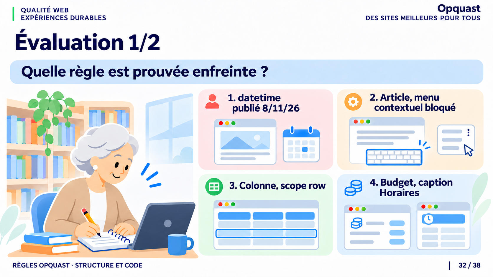
Odette écrit au crayon à côté de son portable. Quatre cartes numérotées de 1 à 4 sont disposées en deux rangées sous la question. Elles montrent une notice et un calendrier, un article avec clavier et menu, un tableau dont une ligne est encadrée, puis un budget et une grille accompagnée d’une horloge. Chaque carte porte son constat.
Textes affichés dans l’image
- QUALITÉ WEB
- EXPÉRIENCES DURABLES
- Opquast
- DES SITES MEILLEURS POUR TOUS
- Évaluation 1/2
- Quelle règle est prouvée enfreinte ?
- 1. datetime publié 8/11/26
- 2. Article, menu contextuel bloqué
- 3. Colonne, scope row
- 4. Budget, caption Horaires
- RÈGLES OPQUAST · STRUCTURE ET CODE
- 32 / 38
Règles Opquast de la slide
Présent ne veut pas dire pertinent
- Une date fournie dans le code doit respecter un format exploitable.
- Le menu contextuel doit rester accessible aussi lorsqu’il est appelé au clavier.
- La portée d’une entête doit correspondre à la relation réelle avec les cellules.
- Le titre d’un tableau doit décrire la nature de ses informations.
Corrigé par objet de règle
- Question 1 - Date exploitable dans le code : datetime publié 8/11/26 ne respecte pas le format standard ; aucune autre forme programmatique appropriée ne le supplée dans ce cas.
- La métadonnée du jeu de caractères est un autre objet et n’est pas examinée dans la première question.
- Question 2 - Accès au menu contextuel : son appel clavier est intercepté dans un article ordinaire, hors exception applicative ; aucune commande Copier n’est éprouvée.
- Question 3 - Association cellule-entêtes : dans ce tableau simple, scope row ne convient pas à des entêtes de colonnes entières ; aucun défaut de titre ni simulation n’est donné.
- Question 4 - Pertinence du titre du tableau : le caption Horaires est présent et accessible, mais ne décrit pas un budget ; les associations aux cellules restent un autre contrôle.
Mémo oral
- Vérifier la valeur, pas seulement la présence.
Transition
- La précision des valeurs compte autant que l’existence des éléments.
Slide 33 - Évaluation 2/2
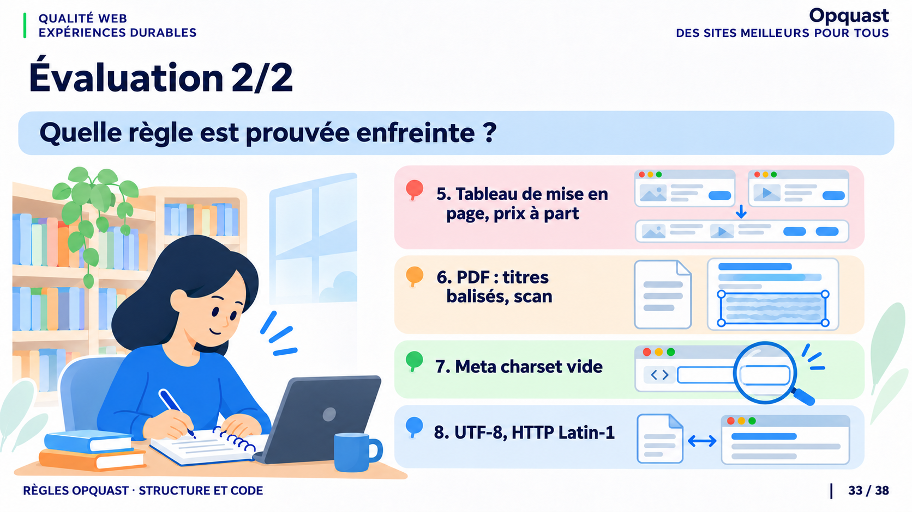
Nora écrit dans un carnet. Quatre cartes numérotées de 5 à 8 sont empilées à droite, sous la question. Elles montrent des fiches réunies dans une bande, un PDF avec sélection d’un bloc-image, une valeur encadrée agrandie par une loupe, puis un fichier relié à une fenêtre par une double flèche. Chaque carte porte son constat.
Textes affichés dans l’image
- QUALITÉ WEB
- EXPÉRIENCES DURABLES
- Opquast
- DES SITES MEILLEURS POUR TOUS
- Évaluation 2/2
- Quelle règle est prouvée enfreinte ?
- 5. Tableau de mise en page, prix à part
- 6. PDF : titres balisés, scan
- 7. Meta charset vide
- 8. UTF-8, HTTP Latin-1
- RÈGLES OPQUAST · STRUCTURE ET CODE
- 33 / 38
Règles Opquast de la slide
Les objets gardent chacun leur contrôle
- L’ordre linéaire doit conserver les associations utiles d’une mise en page.
- Le PDF a déjà ses titres structurés ; ses paragraphes scannés ne fournissent pourtant pas de texte manipulable.
- Cette image du corps ne prouve aucun défaut de titres, qui sont contrôlés séparément.
- Une métadonnée vide ne définit aucun jeu de caractères.
- Le codage annoncé et le contenu transmis doivent rester cohérents avec l’usage réel d’UTF-8.
Corrigé par objet de règle
- Question 5 - Sens après linéarisation : le tableau de mise en page sépare chaque prestation de son prix ; ce n’est pas une simulation de données.
- Question 6 - Texte du PDF interne : le corps est une image sans couche de texte ni restitution textuelle, malgré les titres correctement structurés et sélectionnables.
- Le défaut du corps ne remet pas en cause la structure de titres explicitement correcte ; aucune seconde réponse sur les titres ne découle du scan.
- Question 7 - Métadonnée définissant le jeu de caractères : une valeur charset vide ne définit rien ; le codage effectif est inconnu.
- Question 8 - Cohérence de l’usage réel d’UTF-8 : le contenu est UTF-8 mais l’entête HTTP annonce Latin-1 ; le contrôle confronte l’entête au contenu effectif, sans observation de la meta.
Mémo oral
- Une inspection précise borne la conclusion.
Transition
- Plusieurs de ces difficultés peuvent se rencontrer dans une seule consultation.
Slide 34 - Grand cas : trouvez sept défauts
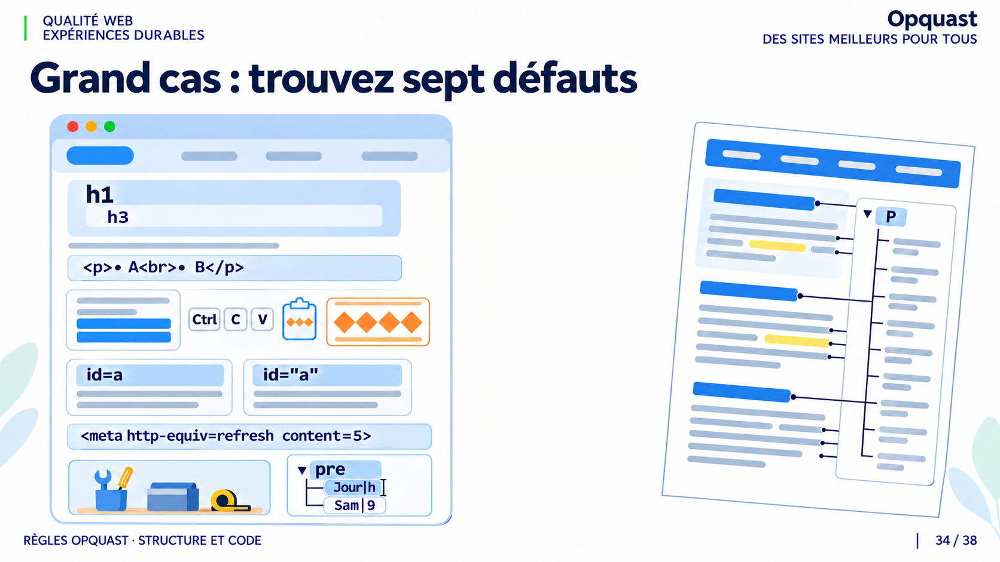
À gauche, une fenêtre rassemble un plan h1 puis h3 en retrait, un fragment p avec des puces, deux lignes sélectionnées et les touches Ctrl, C et V. Un presse-papiers contient des losanges orange ; le même motif apparaît dans la note voisine. Deux blocs côte à côte portent id=a et id="a". Un ruban présente la meta de rafraîchissement. En bas, une vignette de matériel côtoie le nœud pre, ses deux lignes Jour|h et Sam|9, une sélection et un curseur d’insertion. À droite, une page PDF inclinée comporte des bandes de titres bleues et des passages jaunes ; des traits relient ses titres et paragraphes à une arborescence dont la branche est marquée P.
Textes affichés dans l’image
- QUALITÉ WEB
- EXPÉRIENCES DURABLES
- Opquast
- DES SITES MEILLEURS POUR TOUS
- Grand cas : trouvez sept défauts
- h1
- h3
- <p>• A<br>• B</p>
- Ctrl
- C
- V
- id=a
- id="a"
- <meta http-equiv=refresh content=5>
- Jour|h
- Sam|9
- pre
- P
- RÈGLES OPQUAST · STRUCTURE ET CODE
- 34 / 38
Une page et son document
- Le programme se consulte dans le site et dans un PDF textuel.
- Le plan, la liste et les extraits montrent des propriétés distinctes.
- Le collage montre un ancien dessin au lieu du passage sélectionné ; deux blocs portent le même identifiant.
- Les horaires restent du texte aligné ; les titres visuels du PDF sont rattachés à des paragraphes.
- Le code et les balises PDF fournissent d’autres observations ; ils ne se déduisent pas de la beauté du document.
- Le scénario est fictif et ne constitue pas l’audit d’un service réel.
- Le plan est donné comme complet, titres masqués et générés compris ; le fragment de liste et les contenus inspectés représentent l’intégralité des objets concernés.
- Les deux écritures d’id portent sur deux blocs distincts de la même page ; les guillemets ne changent pas la valeur.
- La date, la déclaration de caractères, le codage réel, le menu, les associations et le titre d’un vrai tableau, l’ordre d’un tableau de mise en page et l’accessibilité globale restent hors de cette observation.
Mémo oral
- Observer, rattacher, ne pas extrapoler.
Transition
- Chaque observation doit maintenant être reliée à son défaut précis.
Slide 35 - Correction
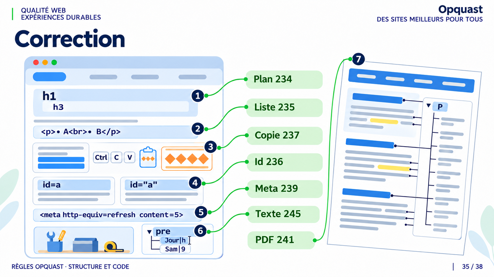
À gauche, la page montre le plan h1 puis h3, les puces dans p, les touches Ctrl, C et V, les losanges du presse-papiers et de la note, les deux attributs id, la meta de rafraîchissement et les horaires dans pre. À droite, les titres et paragraphes du PDF sont reliés à la branche P de son arborescence. Sept pastilles numérotées sont reliées aux étiquettes vertes de la colonne centrale : 1 relie le plan à Plan 234 ; 2 les puces à Liste 235 ; 3 le collage à Copie 237 ; 4 les identifiants à Id 236 ; 5 la meta à Meta 239 ; 6 le texte des horaires à Texte 245 ; 7 le PDF à PDF 241.
Textes affichés dans l’image
- QUALITÉ WEB
- EXPÉRIENCES DURABLES
- Opquast
- DES SITES MEILLEURS POUR TOUS
- Correction
- h1
- h3
- <p>• A<br>• B</p>
- Ctrl
- C
- V
- id=a
- id="a"
- <meta http-equiv=refresh content=5>
- Jour|h
- Sam|9
- pre
- P
- 1
- 2
- 3
- 4
- 5
- 6
- 7
- Plan 234
- Liste 235
- Copie 237
- Id 236
- Meta 239
- Texte 245
- PDF 241
- RÈGLES OPQUAST · STRUCTURE ET CODE
- 35 / 38
Règles Opquast de la slide
Sept défauts et leurs remèdes
- Le plan complet saute un niveau descendant : rétablir la hiérarchie des sections.
- Les puces sont dans un paragraphe : donner aux items une sémantique de liste.
- La copie reprend un ancien dessin au lieu du passage sélectionné : laisser fonctionner la commande courante.
- Deux blocs de la même page portent le même identifiant : attribuer à chacun sa valeur unique.
- La métadonnée déclenche une recharge : le livre demande de ne pas utiliser ce mécanisme.
- Les horaires sont des lignes de texte à séparateurs : les publier comme un vrai tableau.
- Les titres visuels du PDF sont balisés en paragraphes : leur donner une structure de titres conservée à l’export.
Limites de l’observation
- Rien ne prouve les dates, le codage effectif, l’accès au menu ou les propriétés d’un véritable tableau absent de cette scène.
- Les deux écritures d’id ont la même valeur sur deux blocs distincts de la même page ; aucun champ de formulaire ni autre relation n’est inspecté.
- Le fragment p contient toute la liste sans rôles ARIA ; le nœud pre contient seulement les deux lignes d’horaires, sans rôle ni balisage de tableau.
- Les horaires sont du texte sélectionnable avec un curseur d’insertion ; il ne s’agit pas d’une image de texte, et aucun défaut supplémentaire de caption ou d’associations n’est à ajouter.
- Le collage reproduit le dessin antérieur du presse-papiers au lieu des lignes sélectionnées ; il étaye ici l’échec de la commande courante.
- Le PDF offre du vrai texte ; l’inspection complète relie ses titres visuels aux paragraphes P, sans établir de défaut de sélection du texte.
- L’inspection, les signets et le lecteur d’écran restent trois moyens admis pour contrôler les éléments de titres du PDF.
- La date, la meta de caractères, UTF-8 réel, le menu, les associations et le titre d’un vrai tableau, l’ordre d’un tableau de mise en page et l’accessibilité globale ne se jugent pas ici.
Mémo oral
- Une correction utile reste dans sa preuve.
Transition
- Ces diagnostics reposent sur les distinctions rencontrées dans toute la rubrique.
Slide 36 - Cinq distinctions à garder
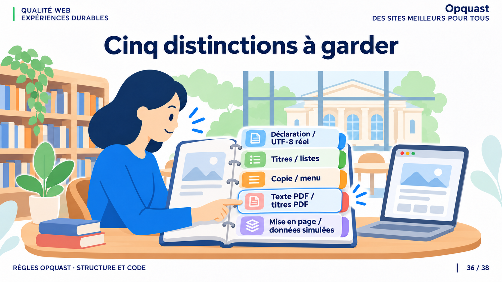
Nora tient un classeur ouvert sur une table de bibliothèque. Cinq onglets colorés portent les distinctions et sont empilés sur sa page droite. Elle pointe l’onglet Texte PDF / titres PDF, entouré de bleu. Son portable, à droite, montre une page en blocs.
Textes affichés dans l’image
- QUALITÉ WEB
- EXPÉRIENCES DURABLES
- Opquast
- DES SITES MEILLEURS POUR TOUS
- Cinq distinctions à garder
- Déclaration / UTF-8 réel
- Titres / listes
- Copie / menu
- Texte PDF / titres PDF
- Mise en page / données simulées
- RÈGLES OPQUAST · STRUCTURE ET CODE
- 36 / 38
Chaque propriété garde sa preuve
- La déclaration du codage ne prouve pas son usage effectif.
- Une liste d’items n’est pas un plan de sections.
- La copie et l’ouverture du menu contextuel sont deux fonctions.
- Le texte du PDF et ses titres demandent deux examens.
- Un tableau de mise en page se linéarise ; une simulation de données se remplace par une vraie structure.
- Dans cette structure, les entêtes donnent le contexte des cellules et le titre nomme l’ensemble.
- Ces cinq distinctions forment un mémo pédagogique, pas une classification officielle ; elles aident à choisir le contrôle sans étendre sa portée.
Mémo oral
- Ne pas donner à une preuve plus de portée qu’elle n’en a.
Transition
- Le bénéfice de ces distinctions est très concret : retrouver la maîtrise du programme.
Slide 37 - Le contenu reste entre leurs mains
Les trois personnes sont réunies à une table de bibliothèque. À gauche, Malik utilise son portable et un médaillon montre un plan avec une entrée sélectionnée. Au centre, Nora utilise la souris ; des passages sont surlignés en jaune sur son écran et dans l’agrandissement. À droite, Odette annote au crayon une feuille comportant des marques jaunes et vertes. Le slogan occupe un bandeau sous le titre.
Textes affichés dans l’image
- QUALITÉ WEB
- EXPÉRIENCES DURABLES
- Opquast
- DES SITES MEILLEURS POUR TOUS
- Le contenu reste entre leurs mains
- Le contenu se lit, se parcourt, se réutilise
- RÈGLES OPQUAST · STRUCTURE ET CODE
- 37 / 38
Garder les usages possibles
- Nora peut reprendre une phrase ; Malik peut rejoindre une section ; Odette peut travailler sur son programme.
- Les caractères, les titres, les commandes et les relations de données servent ces usages.
- Chacun se vérifie par un contrôle adapté, sans qu’un succès dispense des autres.
- La structure du code devient ainsi une aide concrète à la consultation.
- Ces usages possibles ne constituent pas un verdict de conformité globale du service.
Mémo oral
- Le code sert les usages des personnes.
Conclusion
- Le contenu se lit, se parcourt, se réutilise.
Slide 38 - Revenir aux sources
Nora feuillette un livre et écrit dans un carnet, près de son portable. Trois supports portent des onglets titrés : le glossaire fermé à gauche, le livre ouvert devant elle, la checklist cochée en partie à droite. La scène se déroule à une table de bibliothèque.
Textes affichés dans l’image
- QUALITÉ WEB
- EXPÉRIENCES DURABLES
- Opquast
- DES SITES MEILLEURS POUR TOUS
- Revenir aux sources
- Checklist Opquast V5
- Glossaire Structure et code
- Qualité et conformité des services numériques
- RÈGLES OPQUAST · STRUCTURE ET CODE
- 38 / 38
Les sources gardent le détail
- La checklist donne les libellés des règles et leurs fiches.
- Le glossaire précise le vocabulaire de la rubrique.
- Le livre développe les objectifs, les solutions, les contrôles et les nuances de l’expert.
- Un cas concret se vérifie contre ces détails avant de conclure.
- Les fiches de la checklist Opquast V5 restent la référence pour les règles.
- Le portail de formation Opquast donne accès au glossaire selon les droits de consultation ; sa page thématique n’est pas une ressource publique.
- La présentation officielle du livre permet de retrouver l’ouvrage.
Mémo oral
- Un doute précis appelle une source précise.
Conclusion
- Revenir aux sources garde les nuances utiles.